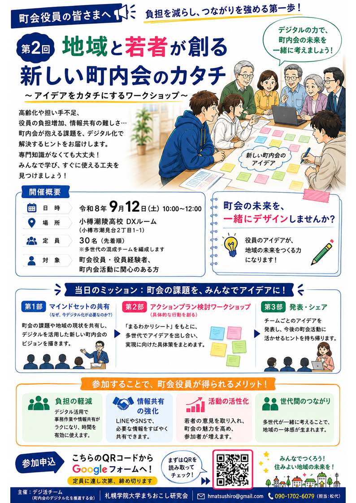
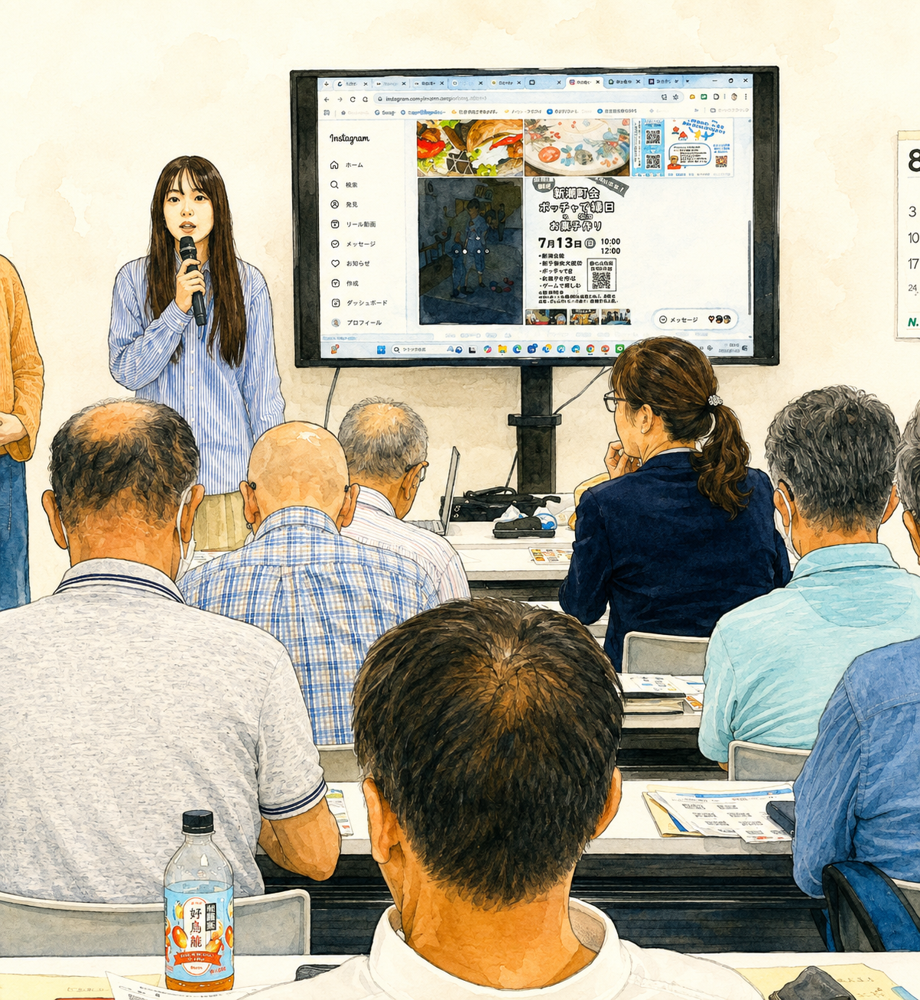
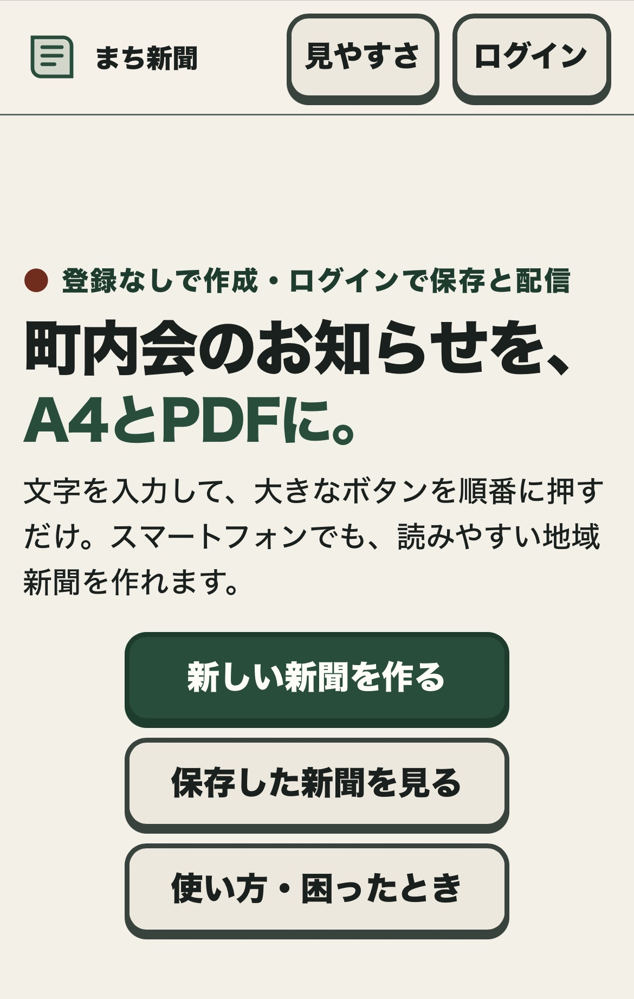
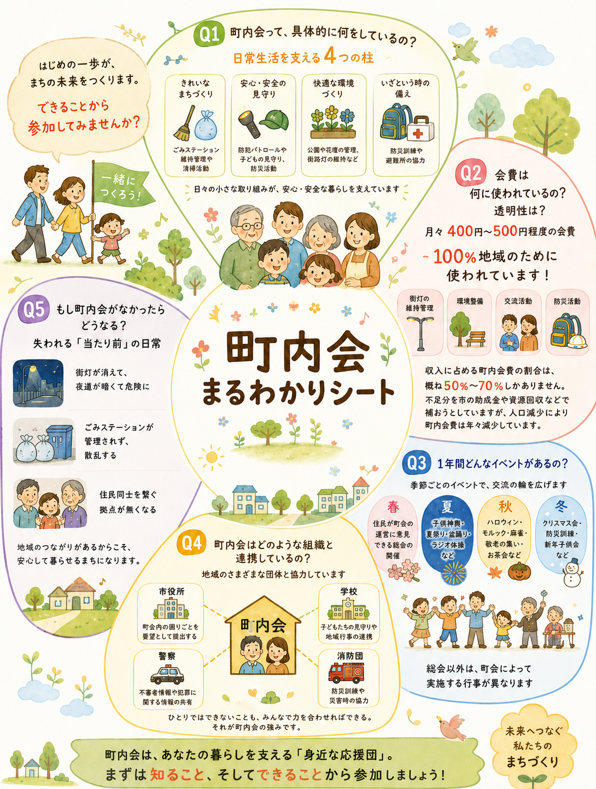

参加者募集
第２回地域と若者が創る新しい町内会のカタチ参加者募集
小樽潮陵高校DXルームにおいて、若者と大人が「地域の危機」を共有し、デジ活チームの仲間を増やすための具体的なアクションプラン（認知向上策）を決定します。9月12日（土）開催。
OUR ACTIVITIES
講座やワークショップ、地域で使えるデジタルツールの開発を通して、若者と地域が一緒に新しい町内会のカタチをつくります。
ACTIVITY ARCHIVE
参加者募集や新しいデジタルツールなど、デジ活チームの最新の取り組みを紹介します。

参加者募集
小樽潮陵高校DXルームにおいて、若者と大人が「地域の危機」を共有し、デジ活チームの仲間を増やすための具体的なアクションプラン（認知向上策）を決定します。9月12日（土）開催。

参加者募集
パソコンやスマホを活用して、回覧板の情報やイベント情報を配信することで、若い世代の町会活動への参加を促すための方法を学びます。10月31日（土）開催。
記事を読む ➡（準備中）
デジタルツール
「まちの新聞づくり」は、ご高齢の役員でも簡単にスマホで電子回覧板を作成できるアプリを目指しています。当面はβ版で運用し、利用者からのご意見をいただきながら完成度を高めて参ります。
利用はこちらから ↗
デジタルツール
「町内会まるわかりシート」は、「地域と若者が創る新しい町内会のカタチ」において話し合われた内容から、町内会の役割と課題をわかりやすくまとめたものです。転入した方への説明などにご活用ください。
記事を読む ➡（準備中）活動は、これからも増えていきます。